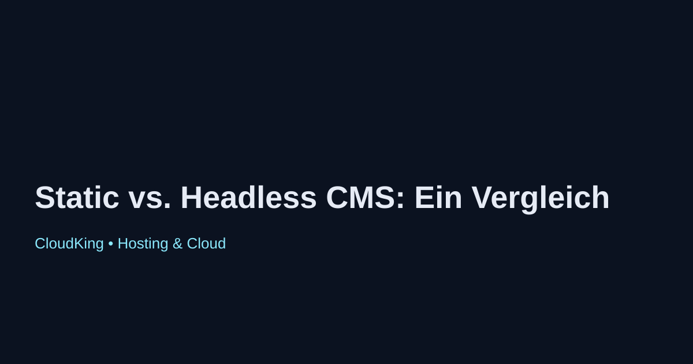

Static vs. Headless CMS: Ein Vergleich
In der heutigen digitalen Landschaft sind Content-Management-Systeme (CMS) entscheidend für die Erstellung und Verwaltung von Webinhalten. Es gibt verschiedene Ansätze, um Inhalte zu verwalten, wobei die beiden beliebtesten Typen statische und headless CMS sind.
Was ist ein Static CMS?
Ein statisches CMS generiert Webseiten im Voraus und speichert sie als HTML-Dateien. Diese Seiten werden dann direkt vom Server ausgeliefert, was sehr schnell ist. Typische Beispiele sind Jekyll und Hugo.
Vorteile eines Static CMS
- Hohe Ladegeschwindigkeit
- Einfachheit in der Bereitstellung
- Geringere Serverkosten
Nachteile eines Static CMS
- Weniger Flexibilität bei der Inhaltsverwaltung
- Schwierigkeiten bei dynamischen Inhalten
Was ist ein Headless CMS?
Ein headless CMS trennt die Backend-Inhaltsverwaltung von der Präsentationsschicht. Inhalte werden über APIs bereitgestellt, was Entwicklern die Freiheit gibt, beliebige Frontend-Technologien zu verwenden. Beispiele sind Contentful und Strapi.
Vorteile eines Headless CMS
- Hohe Flexibilität für Entwickler
- Einfaches Erstellen von Multi-Channel-Inhalten
- Bessere Anpassungsfähigkeit an moderne Webanwendungen
Nachteile eines Headless CMS
- Komplexere Einrichtung und Verwaltung
- Höhere Kosten durch zusätzliche Entwicklungsressourcen
Fazit
Die Wahl zwischen einem statischen und einem headless CMS hängt von den spezifischen Anforderungen Ihres Projekts ab. Statische CMS sind ideal für schnelle, einfache Websites, während headless CMS mehr Flexibilität und Skalierbarkeit bieten, insbesondere für komplexe Anwendungen.